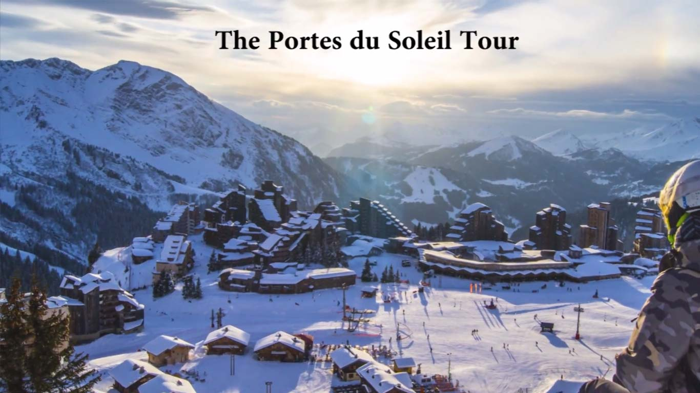

Alpeti

Portes-du-Soleil
| Enfants (2008-2017) | Jeunes (2000-2007) | Adultes (1959-1999) | Seniors (1946-1958) | |
|---|---|---|---|---|
| Tarifs | 58.- | 69.- | 77.- | 69.- |
Quelques infos supplémentaires:
- Ce domaine est constitué de 12 stations alpines reliées entre France et Suisse
- Il est très facile de venir d'un peu partout en Suisse, et plus encore ! Effectivement, le domaine est situé à proximité de grandes gares ferroviaires. Les accès aux stations de skis sont desservis en TGV:– Thonon-les-Bains et Cluses (en France) Les accès aux stations de skis sont desservis en TGV Lyria -Bellegarde, Genève, Lausanne, Montreux et Aigle.Des liaisons par navettes vous déposent au coeur des villages !
Voici les horaires en hautes saisons :
- Ouvert àpartir du 16 Décembre
- Ouvert tous les jours de 9h à 16h30
